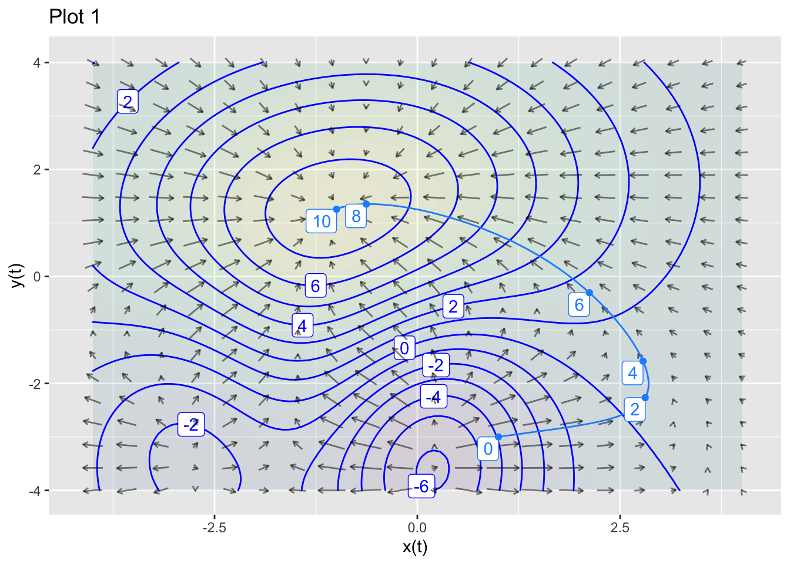
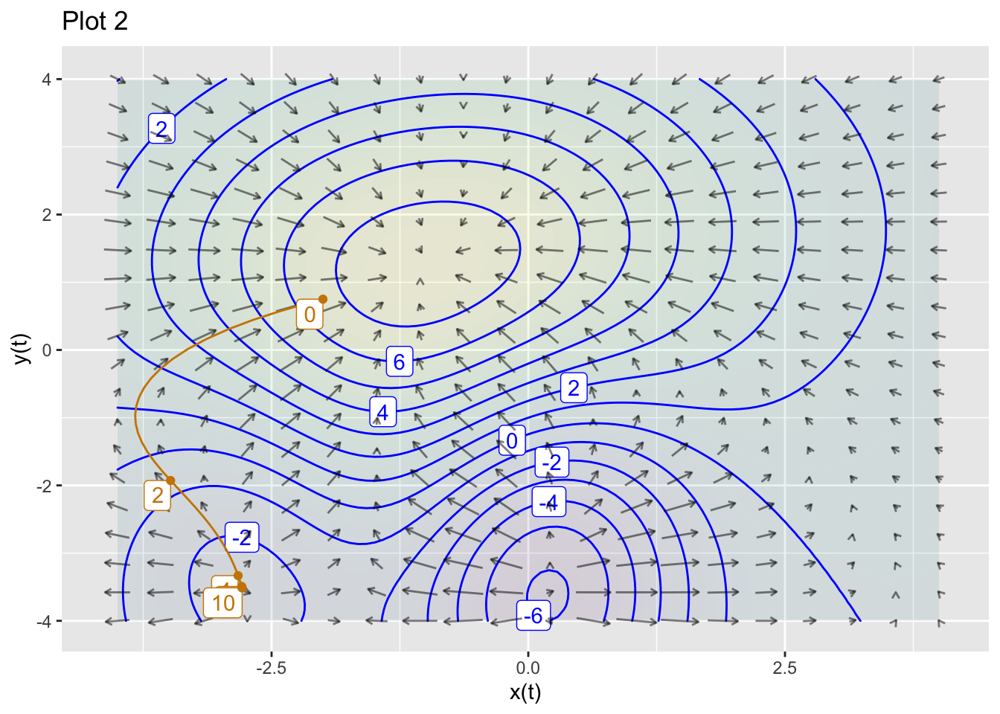
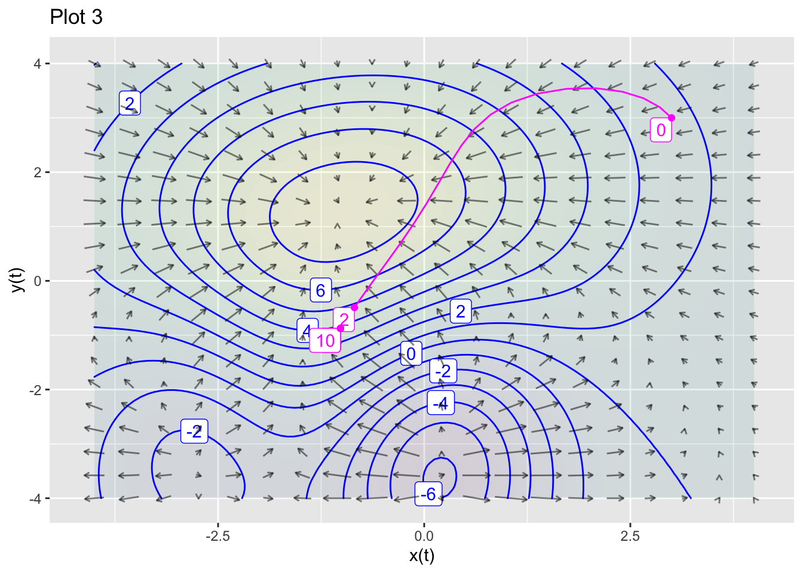
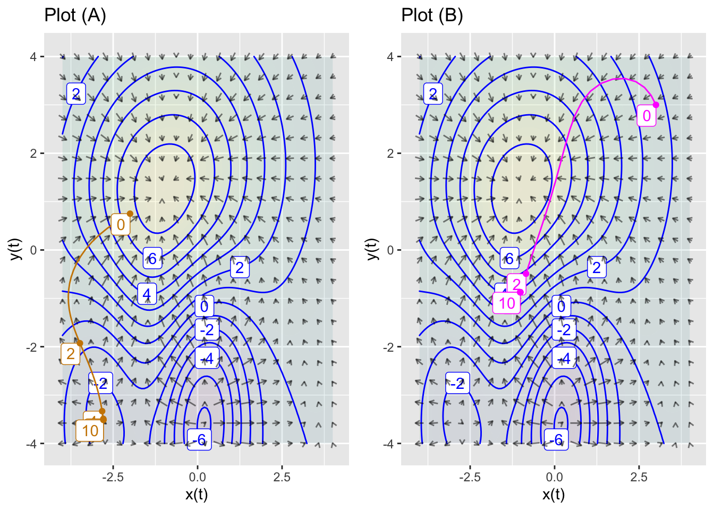
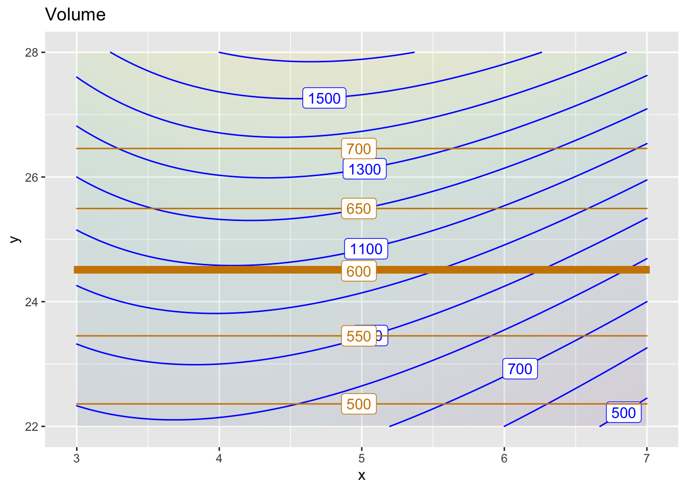
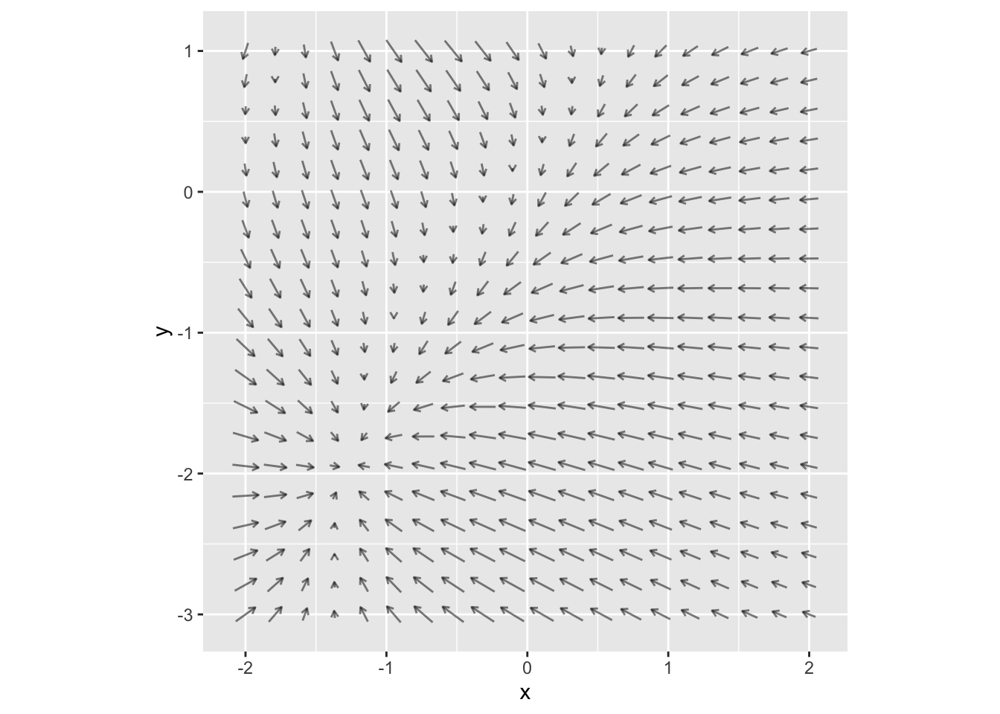
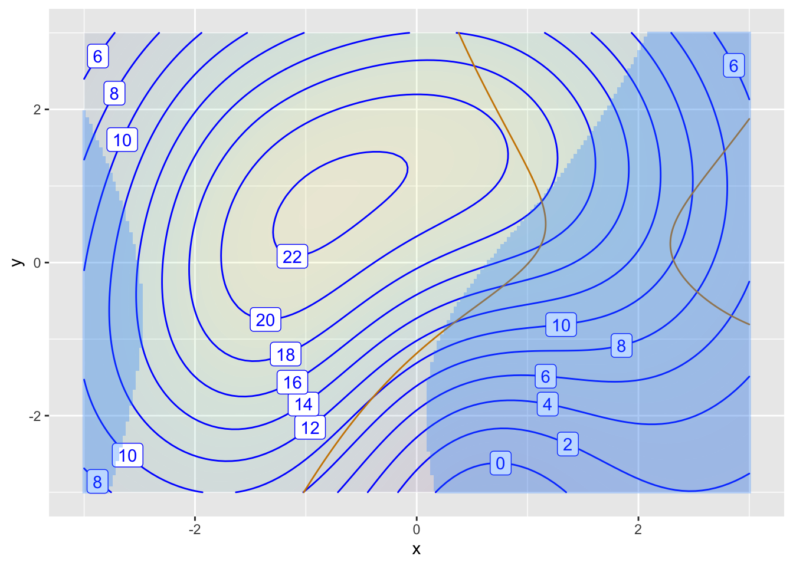
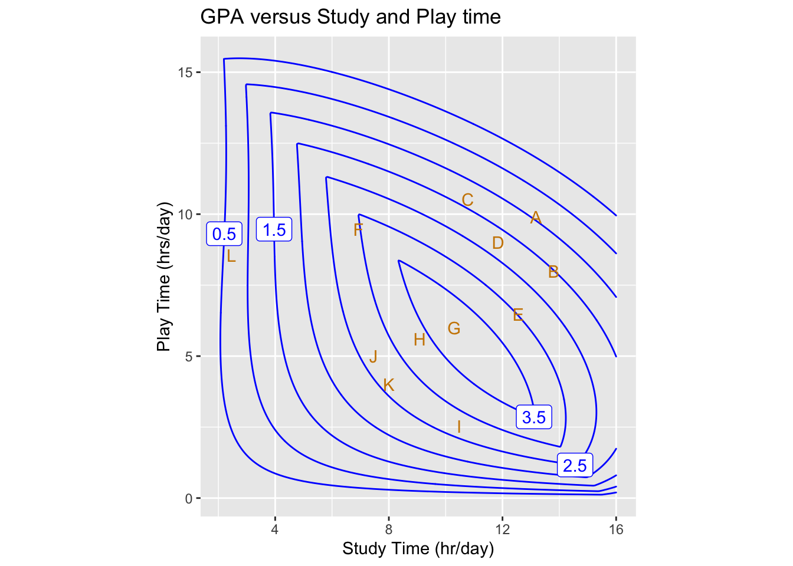
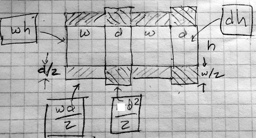
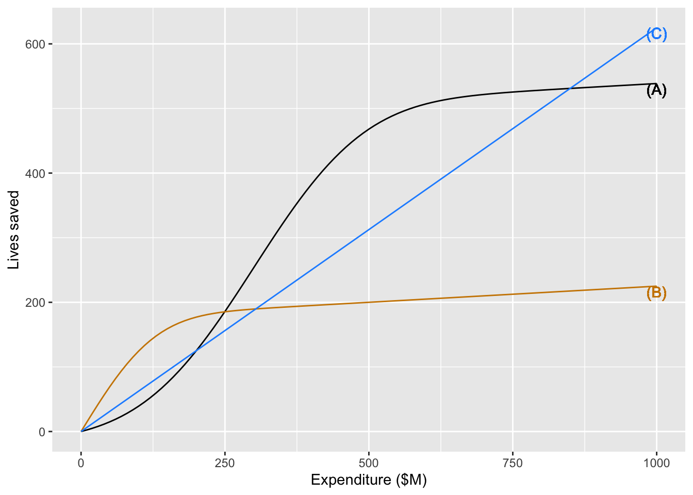

Chap 49 Exercises
\[ \newcommand{\dnorm}{\text{dnorm}} \newcommand{\pnorm}{\text{pnorm}} \newcommand{\recip}{\text{recip}} \]
Exercise 1 The figure shows a contour plot of an objective function \(f(x,y)\) along with the gradient field of that function.
- Is the path in Plot 1 a gradient ascent, a gradient descent, or neither?
ascent descent neither
question id: ape-choose-closet-1

- Is the path in Plot 2 a gradient ascent, a gradient descent, or neither?
ascent descent neither
question id: ape-choose-closet-2

- Is the path in Plot 3 a gradient ascent, a gradient descent, or neither?
ascent descent neither
question id: ape-choose-closet-3
Exercise 2 The two panels below are each contour plots of the same objective function \(f(x,y)\) and the corresponding gradient field. Each panel also has a path going whose start is marked 0 and end is marked 10.
Solution containing functions x(t), y(t).
Solution containing functions x(t), y(t).
Solution containing functions x(t), y(t).
A. In Plot A, is the path a gradient ascent, a gradient descent, or neither?
ascent descent neither
question id: ape-choose-closet2-A
B. In Plot B, is the path a gradient ascent, a gradient descent, or neither?
ascent descent neither
question id: ape-choose-closet2-B
Exercise 3 The plot shows an objective function (contours labeled in black) and a constraint function (in orange).

- What is the constrained argmax when the constraint level is at 600? (Bold orange line.)
600
1100
(x=4, y=24.5)
1150
other
question id: rat-find-magnet-1
- What is the value of the objective function at this argmax?
1000 1050 1100 1150
question id: rat-find-magnet-2
- What is the shadow price of an increase in the level of the constraint?
About 120/50 About 1100/50 About 50/120 About 50/1100
question id: rat-find-magnet-
Exercise 4 Here is the gradient field of an objective function.

Where is the argmax? (Pick the closest answer.)
(x = 0, y = 0)
(x = -0.8, y = 1)
(x = -1.5, y = 2)
Can’t tell from the graph.
question id: dolphin-hang-sheet
Exercise 5 The figure shows an objective function (contour plot) with two different constraints: an inequality constraint (satified outside the blue region), and an equality constraint (brown).

- What is the min of the objective function, ignoring the constraints? (Select the closest answer.)
-6 -1 1 6 None of these
question id: panda-go-kayak2-1
- What is the max of the objective function, ignoring the constraints?
12 20 23 24 None of these
question id: panda-go-kayak2-2
- What is the max of the objective function, subject only to the equality constraint? Is the equality constraint active?
max: 20, active
max: 23, active
max: 24, active
max: 20, not active
max: 23, not active
max: 24, not active
question id: panda-go-kayak2-3
- What is the max of the objective function, subject only to the inequality constraint? Is the constraint active?
max: 20, active
max: 23, active
max: 24, active
max: 20, not active
max: 23, not active
max: 24, not active
question id: panda-go-kayak2-4
- Subject to both the equality and the inequality constraints, what is the min of the objective function? Are both constraints active?
max: 20, only equality constraint is active
max: 23, only equality constraint is active
max: 24, only equality constraint is active
max: 20, both constraints are active
max: 23, both constraints are active
max: 24, both constraints are active
question id: panda-go-kayak2-5
Exercise 6 Based on an extensive but fictive observation of activity and grades of college students, the model shown in the figure was constructed to give GPA as a function of the number of hours each weekday (Monday-Friday) spent studying and spent in social activity and play. (Activity during the weekend was not monitored.)

Several points in the graphic frame have been marked with red letters. Refer to these letters when answering the following questions.
According to the model, what’s the optimal combination of Study and Play to achieve a high GPA?
F
G
H
I
question id: snake-walk-knife-1
Which of these letters marks a place on the graph where the partial derivative of GPA with respect to Play is positive?
B
C
K
L
question id: snake-walk-knife-2
Which if these ketters marks a place on the graph where the partial derivative of GPA with respect to Play is negative.
A
F
H
K
question id: snake-walk-knife-3
- Where is the partial derivative with respect to Study is negative?
Nowhere. \(\partial_{study} GPA()\) is always positive. More study = better grades.
E
F
L
question id: snake-walk-knife-4
Study and Play are not the only activities possible. Sleep is important, too, as are meals, personal care, etc. In the study, students were observed who spent up to 22 hours per day in Study or Play. Presumably, such students crashed on the weekend.
- Suppose you decide to budget 12 hours each weekday day in activities other than Study and Play. Which letter labels the constrained optimal mix (argmax) of Study and Play.
E I K L
question id: snake-walk-knife-5
- What is the “shadow price” of GPA with respect to the budget for a budget constraint of 12 hours? Give both an estimated numerical value as well as units.
-0.5 gradepoints/hour
0 gradepoints/hour
0.5 gradepoints/hour
1.0 gradepoints/hour
question id: snake-walk-knife-6
- Consider a student who budgets 22 hours per day for Study and Play. Which letter is closest to the constrained argmax with a 22-hour constraint?
A
B
C
D
question id: snake-walk-knife-7
- What is the “shadow price” of GPA with respect to the budget constraint of 22 hours? Give the estimated numerical value.
-0.5 gradepoints/hour
0 gradepoints/hour
0.5 gradepoints/hour
1.0 gradepoints/hour
question id: snake-walk-knife-8
- Based on the shadow price from the previous question, which of these is the best advice to give the student (who seeks to maximize GPA)?
It’s hopeless. There aren’t enough hours in the day for you to get a good GPA.
You’ve got to squeeze out more effort studying. Give it your all!
Play more, study less!
Study less
Study less, play less. Sleep!
question id: snake-walk-knife-9
Exercise 7 We’d like to make a folded cardboard box in the most efficient way possible. As you know, cardboard boxes have four sides as well as eight flaps, four for the top and four for the bottom. The flaps are arranged to provide double coverage; you fold the flaps from one direction and then fold over them the flaps from the other direction.

The diagram depicts the box sides and flaps laid out on a flat piece of cardboard. The flaps are shaded with diagonal lines.
Suppose the height, width, and depth of the box are \(h\), \(w\), and \(d\) respectively. The box volume is easy:
\[V = h w d\] The area of cardboard consists of the the four sides and the eight flaps. Each component’s area is a product of the two edge lengths. For example, the box sides are either \(w h\) or \(d h\). The flaps, each of which extends half-way across the bottom or top have areas \(w d/2\).
- Which of these formulas gives the area of the cardboard making up the box?
\(2 h(w + d) + 4 w d\)
\(4 h(w + d) + 2 w d\)
\(2 h(w + d) + 8 w d\)
\(4 h(w + d) + 4 w d\)
question id: duck-tell-laundry-1
A common size for a box is 1.3 cubic feet. We will use feet as the units for \(w\), \(h\), and \(d\).
- The following formulas do not describe the area of the cardboard, but they are nonetheless formulas for something. Except one of them, which cannot be true. Which one? (Hint: Think about dimension.)
\(h(w + d)/d + w d^2/h\)
\(h(w + d) + w h d\)
\(h(w + d) + w^2 h/d\)
\(h(w^2/d + d) + d^2\)
question id: duck-tell-laundry-2
As \(w\), \(h\), or \(d\) are changed, the volume and surface area of the box are changed. Asking for the \(w\), \(h\), and \(d\) that minimize the surface area of the box is not a complete statement of a problem. The minimum surface area will be zero whenever two of the three dimensions have length zero. In other words, we can minimize the surface area by making a box that is no box at all!
To complete the problem statement we need something else. Here, that something is a constraint: We demand that the box have a volume of \(V = 1.3\) cubic feet.
Often, a constraint plays the role of a dimension reduction. With \(w\), \(h\), and \(d\), we have a 3-input optimization problem. But we can use the constraint equation to solve for one of the variables as a function of the other quantities and the (known) volume. For instance, we can find \(h\) as \[h = V/d w\]
- Plug in the above expression for \(h\) into the formula for the surface area of cardboard. Which of the following is the resulting formula in terms of \(w\), \(d\), and \(V\)?
\(2 V(w + d)/wd + 4 w d\)
\(V(w + d)/w + V(w+d)/d + 4 w d\)
\(2 w d (w + d)/V + 4 w d\)
\(2 (w + d)/wd + 4 V w d\)
question id: duck-tell-laundry-3
Active R chunk 1 contains the formula for the surface area \(A(w, d, V)\) of a box of volume \(V\). The graphics command draws a contour plot of \(A()\) as a function of \(w\) and \(d\), holding \(V = 1.3\) cubic feet.
There is a broad area near the center inside the contour at area = 9.5. Towards the upper-right and lower-left corners of the plot frame are contours at higher levels of area.
- The spacing between the contours in the corners is tight, but there is no similarly spaced contour inside the region delimited by the contour at area=9.5. Why not?
We didn’t ask for contours inside 9.5.
The function shape inside the 9.5 contour is the top of a bowl, so it is pretty flat.
The function shape inside the 9.5 contour is the bottom of a bowl, so it is pretty flat.
All the points inside the 9.5 contour are at the same height.
question id: duck-tell-laundry-4
Use Active R chunk 1 to place contours at 10, 9.5, 9.4. You can do this by replacing the argument contours_at = NULL with this:
contours_at = c(10, 9.5, 9.4))Add more contours to build a fence tighter and tighter around the argmin. When the fenced region is tiny, you can read off the min from the contour label. (Remember, the “argmin” is the value of the inputs \(w\) and \(d\) at which the function is minimized. The “min” is the value of the function at the argmin.) But watch out as you do this. If you ask for a contour at a level that is lower than the min, it will simply not be drawn. Or, more precisely, there are no inputs that produce an output that is lower than the min. So you may have to change the interval between levels (e.g. 10, 9.5, 9.4, …) to home in on the argmin.
- The following are values for the output of the function where you might be able to draw a contour. Which one of the values is the smallest for which a contour appears?
9.1
9.05
9.01
9.005
9.0005
9
question id: duck-tell-laundry-5
- From your contour plot, read off the values of \(w\) and \(d\) that produce the minimum surface area for a 1.3 cubic-foot box. What are they? (Hint: You may need to zoom in on the domain to get the precision needed to answer the question.)
\(w \approx 0.9; d\approx 0.9\)
\(w \approx 0.9; d\approx 0.6\)
\(w \approx 0.5; d\approx 0.9\)
\(w \approx 1.9; d\approx 0.9\)
question id: duck-tell-laundry-6
It is easy enough for a person to look at a contour plot and roughly locate the argmin. But this is not feasible if there are more than two inputs to the function being optimized. For such functions, another set of numerical techniques are used based on the gradient of the objective function. Remember that the gradient at any point is a vector that points in the uphill direction and whose length is proportional to the steepness of the slope. (Skiers, beware. In skiing what people call the gradient is the steepest downhill direction. This might account for all the mathematicians learning to ski who point their skis uphill in response to the ski instructor’s instruction!)
You can display the gradient on the plot of the area function by piping (remember %>%) the contour plot into the commented-out command in the sandbox. (Also, replace # pipe to with %>%.)
- Which of these best describes the gradient vector at the argmin?
The gradient points due North.
The length of the gradient vector is maximal.
The length of the gradient vector is minimal.
The length of the gradient vector is zero.
question id: duck-tell-laundry-7
Occasionally, particularly in textbook problems, the argmin or argmax is found algebraically. This still involves calculating the gradient, which will be a function of the input quantities. Then, find the inputs that make all the components of the gradient vector zero.
- Which of these formulas give the gradient vector of \(A(w, d)\)?
\(\partial_w A = -2 \frac{V}{w^2}+ 4 d, \ \ \partial_d A = -2 \frac{V}{d^2} - 4 w\)
\(\partial_w A = -2 \frac{V}{d^2}+ 4 d, \ \ \partial_d A = -2 \frac{V}{w^2} - 4 w\)
\(\partial_w A = -2 \frac{V}{w^2}+ 4 w, \ \ \partial_d A = -2 \frac{V}{d^2} - 4 d\)
\(\partial_w A = -2 \frac{V}{d w}+ 4 w, \ \ \partial_d A = -2 \frac{V}{d w} - 4 d\)
question id: duck-tell-laundry-8
- If the lengths \(w\), \(d\), \(h\) are measured in feet, what unit will \(\partial_w A\) be in?
feet
square feet
cubic feet
1/feet
dimensionless
question id: duck-tell-laundry-9
For those of you who are pining for algebra problems, here you go.
Taking the gradient of \(A(w, d)\) (given in a previous question), set both components to zero, giving you two equations in the two quantities \(w\) and \(d\). There is also a \(V\) in the equations, but we’ve set up the problem saying that we already know \(V\). Numerically, we used \(V=1.3\) cubic-feet, but in the algebra solution we can just leave \(V\) as a symbol, giving general formulas for \(w\) and for \(d\) in terms of \(V\).
- Which of these is the correct formula for the optimal \(w^\star\) as a function of \(V\)? (Hint: You can weed out one of the choices by checking for dimensional consistency.)
\(w^\star = \frac{\sqrt[3]{V}}{\sqrt[3]{2}}\)
\(w^\star = \frac{\sqrt[3]{V}}{\sqrt[3]{3}}\)
\(w^\star = \frac{\sqrt[2]{V}}{\sqrt[2]{3}}\)
question id: duck-tell-laundry-10
The solution for \(d^\star\) is the same as for \(w^\star\). (An experienced algebraist would have noticed that in the formula for area, you can swap inputs \(w\) and \(d\) without changing the output.)
Now compute the formula for the optimal value \(h^\star\). (Hint: Early in the section we gave a formula that involves \(V\), \(h\), \(w\), and \(d\).)
- Which of these is the correct formula for the optimal \(h^\star\) as a function of \(V\)?
\(h^\star = 2^{2/3} \sqrt[3]{V}\)
\(h^\star = 2^{1/3} \sqrt[3]{V}\)
\(h^\star = 3^{2/3} \sqrt[3]{V}\)
\(h^\star = 3^{1/3} \sqrt[3]{V}\)
question id: duck-tell-laundry-11
It turns out that \(h^\star\) is somewhat larger than either \(w^\star\) or \(d^\star\); the optimal box has a square top and bottom, but the sides are not square.
- Which of these is an appropriate explanation for why \(h^\star\) is larger than \(w^\star\) or \(d^\star\)?
People don’t like using boxes that are perfect cubes.
\(h\) multiplies both \(w\) and \(d\), but not vice versa, in the formula for surface area.
The flaps need to get longer as \(h\) gets longer, so smaller \(h\) helps to minimize the amount of cardboard.
The flap-length does not depend on \(h\), only on \(w d\). So we can make \(h\) larger without contributing to the “wasted” area of the doubling over of flaps. The flaps get smaller as \(wd\) gets smaller, so larger \(h\) is preferred.
question id: duck-tell-laundry-12
Exercise 8 In this exercise, you will work with an optimization problem. First, we will ask about a mathematical solution to the problem. Next, we will show that the mathematical solution is not necessarily the best real-world solution because of multiple objectives in decision making. Then we will show you a real-world decision-making rubric that is widely accepted, at least among people who listen to the whole story with an open mind.
The graph shows the estimated number of lives saved by three different health-care related interventions – A, B, C – as a function of the amount of money spent on each.

You have $1,000,000,000 to spend altogether on these interventions. Your policy alternatives are all the different combinations of spending on (A), (B), and (C) that add up to $1B (or less).
How should you split up the money among the interventions? For example, we could spend $125M on B, $125M on C, and $750M on A. This would save an estimated 346 lives. Can we do better?
Imagine that we use \(x\), \(y\) and \(z\) to denote expenditure, with \(x\) spent on intervention A, \(y\) on intervention B, and \(z\) on intervention C. Altogether, the budget is \(x + y + z = \$1B\).
- Suppose \(x = 750\), \(y = 125\), and \(z=125\), where units are millions of dollars. It is suggested that reducing \(x\) by $1M to increase \(z\) by that amount will produce a better outcome in terms of the total number of lives saved. That is, move some money from intervention A to intervention C. Is this suggestion correct? Why or why not?
Not correct. The number of lives saved by spending $750M on A is larger than the number that would be saved by spending that much on B or C.
Not correct. We will want to move the money to B instead.
Correct. The derivative \(\partial_x A(x)\) at \(x=750\) is smaller than the derivative \(\partial_z C(z)\) at \(z=125\).
Correct. We should spend equally on all three interventions. That is, set \(x = y = z = 333.33....\)
question id: tp1-1
A general principle is this: If spending a little more on one intervention increases the output more than the loss due to spending less on another intervention, the shift in funding is worthwhile.
. If you follow the above logic, you will continue to move money from A to C until it is no longer beneficial to do so. What will be the maximum amount of spending on A makes it not worthwhile to move additional money from A to C? (Choose the closest answer.)
$ 250M
$ 375M
$ 500M
$ 625M
question id: tpt1-2
- Imagine that you have moved all the money from A to C that it is worthwhile to do . Which of these statements is true at those values \(x_0\), \(z_0\)?
\(\partial_x A(x_0) = \partial_z C(z_0)\)
\(A(x_0) = C(z_0)\)
\(C(x_0) = A(z_0)\)
\(\partial_x A(x_0) = 0\) and \(\partial_z C(z_0) = 0\).
question id: tpt1-3
We found it worthwhile to move expenditure from A to C to optimize the sum of their outputs and are operating at about \(x_0 = \$500M\) and \(z_0 = \$375M\), leaving \(y=\$125M\) to spend on intervention B. Is it worthwhile to move money from A or C to B or vice versa? But first, a simpler question.
- If we were going to move a small amount of money from A or C into B, would it be better to take the money from A or from C? Why?
Take it from A, since we are spending far more on A than C.
Take it from C, since we are already spending far less on C than on A.
Take it from C. The slope \(\partial_z C(z_0)\) compared to \(\partial_x A(z_0)\) is such that a small reduction on spending on C has less impact than a small reduction in spending on A.
Take it from A. The slope \(\partial_z C(z_0)\) compared to \(\partial_x A(z_0)\) is such that a small reduction on spending on A has less impact than a small reduction in spending on C.
question id: tpt1-4
- Right now in our process, we are planning to spend $125M on B. Is it worthwhile to move money from C to B?
No, the output of B larger than the output of C at $125M.
Yes, move most of the money from C to B.
Yes, but only move a little money from C to B.
No, move money from B to C.
question id: tpt1-5
- At the optimal amount of money \(y^\star\) spent on B and \(z^\star\) spent on C, which of these is true about the slopes \(\partial_y B(y^\star)\) and \(\partial_z C(z^\star)\)?
There is not any fixed relationship. They are what they are.
The two slopes are equal.
The slope of B is greater than the slope of C.
The slope of C is greater than the slope of B.
question id: tpt1-6
- Is it more proper to say the “slope \(\partial_z C(z^\star)\)” rather than the “derivative \(\partial_z C(z^\star)\)?” (This is a general review problem for the course, not something specifically about optimization.)
Yes. A derivative is a function while a slope is a quantity.
No. Slope and derivative are the same thing.
Yes. “Derivative” sounds fancier than “slope”.
No. Slopes measure steepness from right to left, while derivatives give steepness from left to right.
question id: tpt1-7
Background: The graphs are fictitious, but let’s pretend they are:
- A Surgical treatment of congenital heart defects in newborns.
- B Treatment for hemophilia.
- C Memory-care for people with Alzheimers.
Notice that the people being affected are in different, non-overlapping groups. So moving funding from one group to another is effectively “robbing Peter to pay Paul.” If you, as a decision maker inherited a situation where \(x = \$750M\), \(y=\$125M\), and \(z=\$125M\), changing the expenditures would make one group better off (no matter how you did it!) and would make another group worse off. And imagine the headlines if you moved money from A to C or B: “Government slashes funding for newborns!”. Or perhaps an editorial: “We need to find a way to increase funding for hemophilia without cutting other life-saving spending.” This raises an important question: Is it ever worthwhile to forgo spending to save lives? How would anyone decide which lives are worth saving? Most people are uncomfortable with such questions. Yet the decisions taken by leaders, whatever they be, inevitably have a mathematically equivalent formulation which translates to the value of life.
Probably, most people would decline to make a decision comparing two lives, for instance, saving a 10-year old versus saving a 90-year old. But it is not always possible to escape such trade-offs and the people who need to take the decision need guidance about what to do. In an open society, we expect such decisions to be backed by good rationale and so we have to develop means for distinguishing between better and worse rationales.
One example comes from epidemiology and the concept of a “quality-adjusted life year” (QALY). A QALY is a measure of duration of life adjusted for the health condition of the person — a year of a person in good health is 1 QALY, but a year in a person in very poor health is less than 1 QALY.
QALYs do not solve the problem of optimizing health-related outcomes. They are an imperfect means of dealing with an impossible problem. Sometimes that is the best we can do.
Exercise 10
You are a member of a health-care oversight committee that allocates funds for investment in health-care facilities. The committee has two proposal before it and needs to decide how best to spend the available $50M budget:
- Proposal A: Expansion of the pediatric organ transplant unit.
- Proposal B: Creation of a new rehabilitation center for traumatic injury patients.
Experts have evaluated each proposal in terms of different cost options and the impact that each will have on health outcomes. Following a standard epidemiological method, the impact is estimated in terms of “Quality Adjusted Life-Years” (QALY), a measure that combines the number of people affected, the number of years of prolonged life, and the improvement in quality of life for those treated.
The expert estimates are available in the data frame QALY_impact:
QALY Impact of the Proposals
Such estimates from experts should be taken with a grain of salt, but they are often the best information you have to inform a model.
You can turn the expert’s opinions into functions by using splines. In this case, there is good reason to think that output will increase monotonically with expenditure, so a monotonic spline is a good choice. The continuous functions are created in Active R chunk 2:
The problem is to find the best values for expenditures on Proposal A and B — call these expenditures \(x_A\) and \(x_B\) – given constraint that total expenditure is \(x_A + x_B = 50\).
A simple approach is to plot out the total benefit as a function of expenditures on each of A and B, as in Active R chunk 3:
How can you confirm that the red contours in the plot genuinely represent the budget constraint at the indicated level?
- What’s the largest number of QALYs that can be produced from combining the two proposals with a total budget of $50M?
120 160 180 240 300 340 350 360
question id: crow-trim-laundry-1
- What is the location of the argmax from Active R chunk 3?
\((A = 0, B = 50)\)
\((A = 6, B = 44)\)
\((A = 12, B = 38)\)
\((A = 22, B = 28)\)
\((A = 34, B = 16)\)
\((A = 41, B = 9)\)
\((A = 50, B = 0)\)
question id: crow-trim-laundry-2
Another way to look at the problem is to find the total QALY outcome as a function of the amount \(x_A\), recognizing that once \(x_A\) is set, the remaining money will go to option B, so \(x_B = 50-x_A\). Active R chunk 3
Changing the Budget
A broader social question is whether the budget is being set at an appropriate level. One way to examine this is to look at how the QALY outcome changes as the budget changes.
For this, we will find values of \(x_A\) and \(x_B\) at which the derivatives \(\partial_{x_A} f_A()\) and \(\partial_{x_B} f_B()\) are equal.
The following graphic shows the difference \(\partial_{x_A} f_A() - \partial_{x_B} f_B()\) as a function of \(x_A\) and \(x_B\). The contours are very twisty, but the zero contour(s) indicates the inputs for which the difference in derivatives is zero. Also shown are budget constraints (magenta).
Yet another constraint!
- The American Association of Allergy Activists (AAAA) has lobbied Congress to mandate that, of the 50 units of available funds, funding for A must be \(x_A \geq 40\). How much would this constraint reduce the overall output for the two interventions combined? (Remember, if you’re spending, say, 45 on A, you cannot spend more than the remaining 5 on B.) The challenge for you in answering this question is to pick the appropriate one of the above graphs. Once you have done that, the answer is evident.
No reduction at all.
About 10-20 QALYs.
About 40-60 QALYs.
About 100-120 QALYs.
It would increase the output.
question id: crow-trim-laundry-3
Activities
Exercise 9 The figure shows the path(s) of a ray of light traveling through three layers of an optical medium. Each layer has a different index of refraction, which reflects the speed of light in that medium compared light traveling in empty space.

At each interface between media with differing indices of refraction, the light is reflected. The proportion of light reflected at the interface 0-1 is \[R_{0,1} = \left(\frac{n_0-n_1}{n_0+n_1}\right)^2\ .\]
Similarly, at interface 1-2, a fraction \[R_{1,2} = \left(\frac{n_1-n_2}{n_1+n_2}\right)^2\ .\]
The total amount reflected in passing through both layers is approximately $R_{0,1} \(\times\) R_{1,2}$.
The point of sandwiching optical elements in this way is to reduce reflection (or, equivalently, increase the transmission of light). Correspondingly, we will call the \(n_1\) layer an anti-reflection layer. Special materials are selected for such layers to minimize reflection.
Suppose that the indices of fraction \(n_0 = 1\) and \(n_2 = 2\).
What is the optimal value of \(n_1\) (argmax) in the anti-reflective layer to minimize the total reflection of light passing from the left optical element into the right optical element? What proportion of light is reflected at that argmax?
Suppose that there were no anti-reflective layer, that is, the \(n_0\) element abutted directly on the \(n_2\) region. What fraction of light would be reflected then?
There can be more than one anti-reflective layer. Imagine that the \(n_1\) layer were replaced with two layers, which we will call \(A\) and \(B\), with indices of refraction \(n_A\) and \(n_B\).
- What are the optimal values for \(n_A\) and \(n_B\) to maximize transmission from the \(n_0\) medium to the \(n_1\) medium?
- Can the two-layer scheme improve transmission compaared to the 1-layer scheme?
No answers yet collected